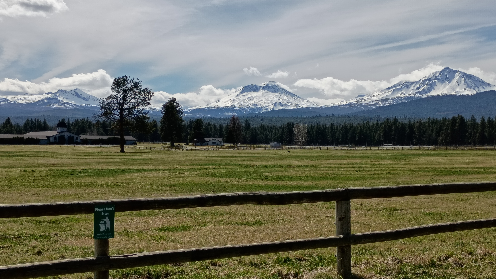

Americans aren’t facing a democratic collapse. We’re living in its aftermath
For tens of millions of people, democratic life has been absent for decades as they endure precarious housing, inaccessible healthcare, unchecked policing powers, debt servitude, vanishing public goods, and near-total exclusion from meaningful formal political power. For others – the wealthy, the politically connected, the donors and oligarchs – the same system produces not insecurity, but insulation, along with a constant need to rationalize the deprivation of others upon which their power is predicated and to disavow any responsibility for it.
Should add, for many people, democratic life, since the founding of America, has nearly never existed.
❄
science.nasa.gov/planetary-science
science.nasa.gov/solar-system/planets
science.nasa.gov/venus/venus-facts
❄
Apocalypse no: how almost everything we thought we knew about the Maya is wrong
Outsiders’ power over the story of the Maya is written into the people’s very name. After their arrival in the early 1500s, the Spanish named local populations “Maya” after the ruined city of Mayapán in present day Mexico. Yet the Maya never saw themselves as one people and were never governed under one empire. They spoke many languages – 30 of which are still around – and belong to an intricate mix of cultures and identities.
❄
Editing the same document on a computer from different geographic locations over the internet in 1968.
"The Mother of All Demos" was a landmark computer demonstration, named retroactively, of developments by Stanford Research Institute's Augmentation Research Center . . . on December 9, 1968.
At separate times, his Augment associates Jeff Rulifson and Bill Paxton appeared in another portion of the screen to help edit the text remotely from ARC. While they were editing they could see each other's screen, talk and see each other as well. He further demonstrated that clicking on underlined text would then link to another page of information, demonstrating the concept of hypertext.
❄
Chickens Get All the Attention, but You Should Raise Ducks Instead
Chickens need individual nesting boxes and fight for preferred spots, while ducks have a more communal approach to laying eggs (which is: wherever you feel like it, man). Sometimes an egg will pop out of a duck’s rear while she’s just standing around, surprising even her. (I have video of this; it’s hilarious.) To compensate for this haphazardness, the shells of duck eggs are twice as thick as those of a chicken’s. Also, ducks don’t make noise while laying; unlike chickens who alert the neighborhood, they’re more discreet and humble. Ducks aren’t protective of eggs like chickens because of a migratory instinct that keeps them from getting too attached to one place; if food runs low, the flock will be moving again. Spring, it should be said, is a little different, and allowing a duck to accumulate a few eggs in a clutch might click her into “broody” mode, but for the most part, ducks are pretty unconcerned with their calcareous progeny.
Almost . . .
OK, there is the poop thing. Though there are many reasons to choose ducks over chickens, there’s only one legitimate counterargument I’ve heard, and it’s purely aesthetic. Everyone poops, but creatures’ quality and consistency can be awfully varied, from spherical rabbit marbles to Pope logs in the woods. Any other animal unloading like a duck would be described as having “explosive diarrhea.” Sometimes it shoots out with a cartoon “splorch” sound (hilarious!). They will splatter walls with it, and every egg needs to be cleaned. It’s far from Instagram-friendly.
❄
The sun and thousands of its twins migrated across the Milky Way just in time
The telltale sign of the sun’s galactic journey is its chemical composition, says Tokyo Metropolitan University astronomer Daisuke Taniguchi, a co-author on both of the studies. “Astronomers know that the sun’s birthplace lies closer to the galactic core than its current position,” Taniguchi explains. The Milky Way’s dense inner regions formed stars faster and accumulated heavy metals far quicker than the outer edges—and a star with the sun’s age and chemical components would not have been able to form at its present location. But to get there required crossing a dramatic border.
Observations of the Milky Way have revealed an enormous rotating barlike structure made of gas, dust and millions of stars slicing through our galactic center. This bar creates a distinct gravitational phenomenon known as the corotation barrier that prevents inner galaxy stars from migrating to the outskirts. Computer simulations suggest that only about 1 percent of stars born at the sun’s presumed original location could successfully breach this barrier to reach our current neighborhood within a 4.6-billion-year time frame. And yet Taniguchi and his colleagues discovered that thousands of “solar twin” stars with a mass and a metal makeup similar to those of the sun managed to do so.
❄
Italian ballot. Verde. Grande.
❄
Collision May Have Formed the Moon in Mere Hours, Simulations Reveal.
Billions of years ago, a version of our Earth that looks very different than the one we live on today was hit by an object about the size of Mars, called Theia – and out of that collision the Moon was formed. How exactly that formation occurred is a scientific puzzle researchers have studied for decades, without a conclusive answer.
Most theories claim the Moon formed out of the debris of this collision, coalescing in orbit over months or years. A new simulation puts forth a different theory – the Moon may have formed immediately, in a matter of hours, when material from the Earth and Theia was launched directly into orbit after the impact.
Video: New Supercomputer Simulation Sheds Light on Moon’s Origin.
❄
Rainy day. Had to get out for a ride. Rivers are swelling, sometimes across roads. Fun to drive through. Lots of little waterfalls created off the tops of hills and bluffs and mountains as the rain races to the ocean. Beautiful ride. Moist gear.
❄
The back yard.
❄
Peter Thiel is an anagram for 'Hitler Pete' and 'The Reptile.' Huh.
See also: Dark Enlightenment.
❄
Afroman Wins Verdict Rejecting Lawsuit Filed by Ohio Cops Over Mocking Music Videos
Afroman won a jury verdict Wednesday (March 18) clearing him of wrongdoing in a lawsuit filed by seven Ohio police officers, who claimed the rapper defamed them by releasing music videos that mocked them after a failed raid on his home.
The verdict ended a three-day trial that captivated social media with outlandish moments from the courtroom, including Afroman mounting a colorful defense from the witness stand in a flamboyant American flag suit; one of the deputies crying repeatedly as a video insulting her played for more than 10 minutes; and a testy exchange in which Afroman’s lawyer asked another deputy if his wife was cheating on him.
“I got freedom of speech. After they run around my house with guns and kick down my door, I got the right to kick a can in my back yard, use my freedom of speech, and turn my bad times into a good time, yes I do,” he told jurors on Tuesday. “And I think I’m a sport for doing so, because I don’t go to their house, kick down their doors [and] then try to play the victim and sue them.”
~
It was either the above post or one about NASA mapping the sea floor via satellite -or- I was gonna post NASA mapping, but then I got high.
❄
Ride to Florence.
❄
Ride to Sisters.

caveat lector